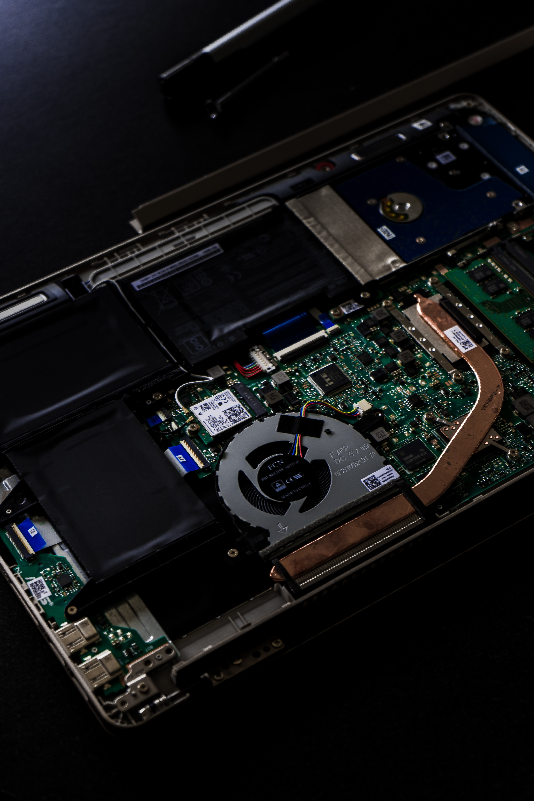
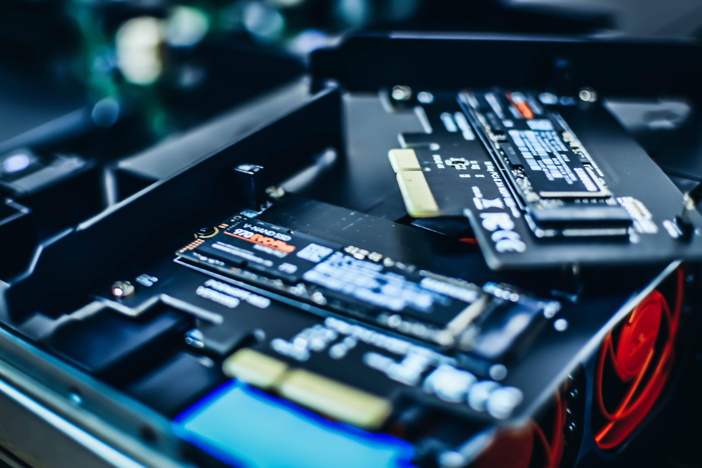
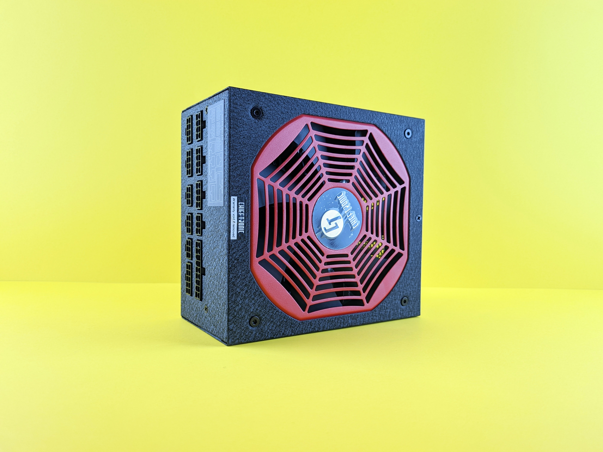

In this website I will talk all about computer parts and explain what they do!

The CPU also known as The central processing unit is like the brain of a computer!
Every computer needs a CPU from your phone to your computer!
The strength of CPU's are determined by the Gigahertz per second,Cores and threads!
The CPU is placed in a socket in the motherboard that size depends on the CPU.
There are 2 main makers of Cpus, Intel and Amd!
The Motherboard

The motherboard connects all the different parts in a computer together.
The motherboard is essential to connect all the different parts together,
Nothing in the computer will work unless its connected to a motherboard
The RAM

The ram in a computer is to store information that needs to be used quickly like the operating system!
In most computers there will be 8-32GBs of ram, The more ram the faster your computer will run more tabs, Games and applications
The Storage

Storage comes in 2 forms, Hardrive and SSD (SSD is the one in the photo) These are used to Store information on the computer
examples of things it would store is game data or files.
CPU cooler

A CPU cooler keeps the temperature of the CPU low for maximum performance. The CPU can reach 100 degrees celesus.
There is 2 types of CPU coolers, air coolers that have a fan and push the air out and water coolers that use cold water.
GPU

A GPU also known as a graphics processing unit is need to display graphics to the screens.
Graphics card also have around 8-12GBs of ram built in.
A better graphics card will make video games and renders way faster and look better
Power Supply

A power supply gets the power for the whole computer, You can pick the watage for the one that suits you best